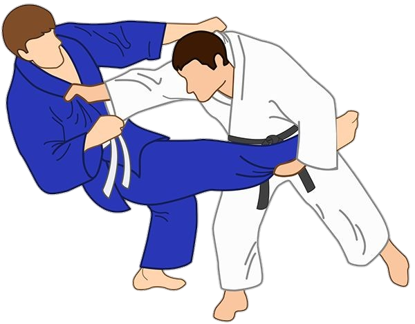
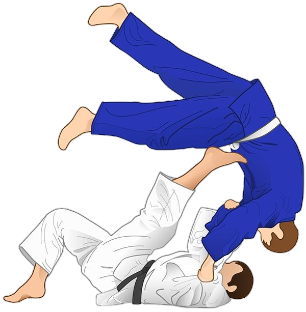
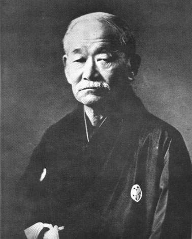
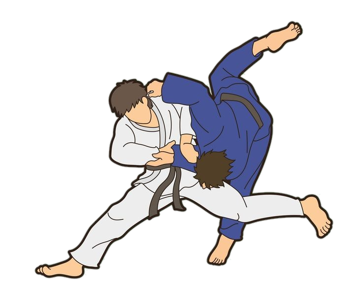
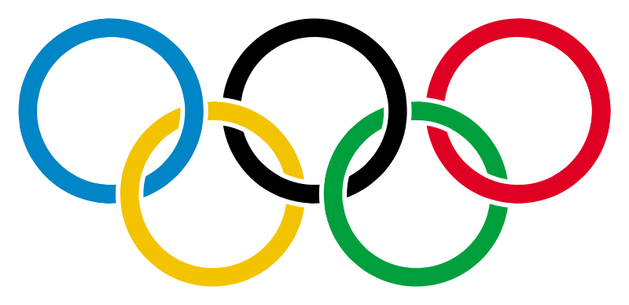

Judo bedeutet wörtlich „sanfter/flexibler Weg“
(Zusammensetzung aus jū „sanft“, „nachgiebig“, „flexibel“ und dō „Weg“).

Die Wurzeln des Judo reichen bis in die Nara-Zeit (710–784) zurück. In den beiden damaligen Chroniken Japans, dem Kojiki (712) und dem Nihonshoki (720), gibt es Beschreibungen von Ringkämpfen, die mythischen Ursprungs sind. Seit 717 fanden am Kaiserhof alljährlich Preisringen statt, an denen Ringer aus allen Provinzen teilnahmen. Dieses Ringen wurde Sechie-Zumo genannt. Die Bushi griffen dieses Sumo auf und entwickelten daraus das yoroikumiuchi (Ringen in voller Rüstung). Mit dem Aufstieg der Kriegerklasse Ende des 12. Jahrhunderts erlebten die Kampfkünste einen starken Aufschwung. Das kulturelle Geschehen wurde immer mehr vom Geist der Bushi bestimmt. In dieser Zeit entwickelten sich die Ursprünge des legendären Ehrenkodex’, der später von Nitobe als Bushidō beschrieben wurde.

Im Japan der Ashikaga-Epoche (1136–1568) entwickelten sich unterschiedliche waffenlose Nahkampfsysteme: Eine Variante war Kogusoku (kleine Rüstung). Diese Kampfart war nach den in dieser Zeit neu entwickelten leichteren Rüstungen benannt. In der Literatur und den historischen Dokumenten aus dieser Zeit finden sich weitere Nahkampfsysteme wie Tai-Jutsu („Körperkunst“), Torite („Ergreifen der Hände“), Koshi-no-Mawari („Hüfteindrehen“), Hobaku („Ergreifen“), Torinawajutsu („Kunst des Ergreifens und Verbindens“). In der Mitte des 16. Jahrhunderts führten die Portugiesen die Schusswaffen in Japan ein und die Kriegskünste – Bugei mit Schwert, Pfeil und Bogen – verloren auf dem Schlachtfeld an Bedeutung. Ihre Traditionen wurden aber in der Edo-Zeit fortgeführt und im Sinne des Prinzips Bunbu (literarische Bildung und militärische Praxis) zur Pflicht gemacht.

Für das Prinzip des Nachgebens Ju in der Kampfkunst gibt es verschiedene Einflüsse, Erklärungen, Legenden und Anekdoten: Im Konjaku-Monogatari findet man zum ersten Mal den Begriff yawara (weich) im Zusammenhang mit einer Geschichte über das japanische Ringen. Stark waren sicherlich auch die chinesischen Einflüsse, denn seit der Ashikaga-Epoche wurde offiziell der Handel mit China aufgenommen und bis zum Ende des 16. Jahrhunderts immer weiter ausgedehnt. Über die Entstehung des Jiu Jitsu existieren unterschiedliche Berichte, die einen legendenhaften Charakter haben. Ihr historischer Wahrheitsgehalt ist schwer nachzuweisen. Die poetisch schönste ist sicherlich die Legende des Arztes Akiyama Shirobei aus Hizen, der in China Medizin und die Kunst der Selbstverteidigung studiert haben soll. Wieder in Japan, zog er sich in einen Tempel namens Dazai-Tenjin zurück. Der Überlieferung nach war es Winter, und am 21. Tag im Tempel setzte starker Schneefall ein. Er betrachtete die Bäume; ihm fiel auf, dass viele Äste unter der Last des Schnees brachen, die des Weidenbaums aber wegen ihrer Elastizität nachgaben und den Schnee abgleiten ließen. Auf Grund dieses Vorgangs soll der Arzt Shirobei das Prinzip des „Ju“ – Nachgebens – in der Kampfkunst eingeführt haben. In der ersten Hälfte der Edo-Epoche (17./18. Jahrhundert) entwickelten sich unzählige Jiu-Jiutsu- oder artverwandte Schulen – japanisch Ryu. Mit dem Ende der Tokugawa-Zeit und der Öffnung Japans kam es auch zu starken Veränderungen in der japanischen Gesellschaft. Durch die Meiji-Reform kam es zu einer Fülle von staatlichen, wirtschaftlichen und kulturellen Reformen. Die japanischen Künste wurden stark zurückgedrängt, alles „Westliche“ hatte Vorrang. Doch schon zu Beginn der 1880er-Jahre gab es eine Rückbesinnung in Bezug auf die geistlichen und sittlichen Werte.
Kanō Jigorō

Kanō Jigorō (1860–1938) wuchs in diesem Japan der extremen Veränderungen auf. Er lernte Jiu Jitsu an verschiedenen Schulen wie der Tenshinshinyo-Ryu und der Kito-Ryu. 1882 gründete Kanō Jigorō seine eigene Schule, den Kodokan („Ort zum Studium des Wegs“) in der Nähe des Eisho-Tempels im Stadtteil Shitaya in Tokio. Er nannte seine Kunst Judo, da das Kanji (Schriftzeichen) Ju sowohl „sanft“ als auch „Nachgeben“ bedeuten kann und das Zeichen Do ebenfalls mit „Grundsatz“ und nicht nur mit „Weg“ übersetzt werden kann. Sein System bestand neben Wurftechniken (Nage Waza) aus Bodentechniken (Ne Waza) sowie Schlag-, Tritt- und Stoßtechniken (Atemi Waza), die er dem System der Kito-Ryu und der Tenshinshinyo-Ryu entnommen hatte. Dies waren traditionelle Jiu-Jitsu-Schulen, bei denen Kanō mittlerweile das Menkyo-Kaiden (die universelle Lehrerlaubnis und Meisterwürde) innehatte. Es war sogar eine kleine Sparte Waffentechnik (z. B. mit Schwert und Stöcken) im Curriculum vorhanden. Kanō selektierte zwar einige Techniken aus, welche dem von ihm gefundenen obersten Prinzip „möglichst wirksamer Gebrauch von geistiger und körperlicher Energie“ widersprachen. Dass er dabei aber alle „bösen“ Techniken entfernt hätte, welche geeignet sind, einen Menschen ernsthaft zu verletzen oder zu töten, ist ein weitverbreiteter Irrtum. Im Jahre 1886 konnten Schüler Kanos einen regulären Kampf zwischen der Kodokan-Schule und der traditionellen Jiu Jitsu-Schule Ryoi-Shinto Ryu für sich entscheiden. Es wird behauptet, Kano habe das Judo durchaus als ernstzunehmende Selbstverteidigungskunst inklusive Schlägen und Fußtritten konzipiert, ohne die ein Sieg über Ryoi-Shinto Ryu nicht möglich gewesen wäre. Aufgrund dieses Erfolgs verbreitete sich Judo in Japan rasch und wurde bald bei der Polizei und der Armee eingeführt. 1911 wurde Judo an allen Mittelschulen Pflichtfach. Der berühmte japanische Regisseur Akira Kurosawa drehte seinen ersten Film Sanshiro Sugata 1943 über das Judo. Nach dem Zweiten Weltkrieg wurde der Kodokan für zwei Jahre zwangsweise geschlossen, 1947 wurde es wiedereröffnet.
Der Weg in den Westen
Die Geschichte des Judo in Deutschland begann 1906, als japanische Kriegsschiffe Kiel besuchten und Wilhelm II. die Kampfkunst beeindruckte. Erich Rahn gründete im selben Jahr die erste deutsche Jiu-Jitsu-Schule. Alfred Rhode und Heinrich Frantzen waren weitere wichtige Pioniere. 1926 fanden die ersten deutschen Judo-Meisterschaften statt, und 1932 wurde der „Deutsche Judo-Ring“ gegründet. Judo verbreitete sich in Europa, unterstützt durch Besuche von Kanō Jigorō. Unter den Nationalsozialisten wurde Judo 1933 in das Fachamt Schwerathletik integriert und verlor seine Eigenständigkeit. Während dieser Zeit entstanden eigene deutsche Graduierungsrichtlinien. Nach dem Zweiten Weltkrieg war Judo bis 1948 verboten, wurde dann aber in beiden deutschen Staaten wieder zugelassen. 1952 wurde das Deutsche Dan-Kollegium (DDK) und 1953 der Deutsche Judo-Bund (DJB) gegründet. In der DDR entstand 1958 der Deutsche Judo-Verband (DJV). 1966 bzw. 1970 fanden die ersten Frauenmeisterschaften in der DDR und der Bundesrepublik statt. 1975 wurden in München die ersten Frauen-Europameisterschaften ausgetragen.
Entwicklung zum Wettkampfsport
Nach dem Zweiten Weltkrieg veränderte sich Judo immer mehr vom Nahkampfsystem zum Wettkampfsport. Schlag-, Tritt- und andere den Gegner ernsthaft verletzende Techniken wurden als für den Wettkampf unnötig nicht mehr unterrichtet und gerieten dadurch teilweise in Vergessenheit. Die verbliebenen Techniken sind hauptsächlich Würfe (jap. Nage Waza), Falltechniken (jap. Ukemi Waza) und Bodentechniken (jap. Katame Waza). Entgegen der landläufigen Meinung gehören Schlag- und Tritttechniken nach wie vor zum Judo. So sind in Katas wie der Kime-no-Kata oder der Kodokan Goshin-Jutsu immer noch potentiell tödliche Aktionen vorhanden. Allerdings werden Schläge und Tritte wie auch manch andere gefährlichere Techniken im heutigen Judo, wenn überhaupt, erst zur Erlangung höherer Graduierungen als Judo-Selbstverteidigung unterrichtet.

Weltmeisterschaften und Olympische Spiele
1956 fanden in Tokio die ersten Weltmeisterschaften statt. Damals gab es allerdings nur eine offene Gewichtsklasse. 1961 bei den dritten Weltmeisterschaften in Paris wurden dann erstmals Gewichtsklassen eingeführt. Dort gelang es dem Niederländer Anton Geesink erstmals, die Vormachtstellung der Japaner zu brechen und die japanischen Judoka zu besiegen. Bei den Olympischen Spielen in Tokio 1964 war Judo erstmals als olympischer Sport zu sehen. Der aus Köln stammende Wolfgang Hofmann gewann als erster Deutscher eine Silbermedaille bei den Olympischen Spielen. Zu diesem Anlass brachten die Deutsche Bundespost und auch die Deutsche Post der DDR eine 20-Pfennig-Briefmarke mit Judo-Motiv heraus. 1968 bei den Olympischen Spielen in Mexiko-Stadt wurde Judo zunächst wieder aus dem olympischen Programm gestrichen. Seit den Olympischen Spielen 1972 in München gehört Judo beständig zum olympischen Programm. War Judo zunächst eine Männerdomäne, so wurde 1988 Frauen-Judo bei den Olympischen Spielen in Seoul als Demonstrationswettbewerb vorgestellt. Seit den Olympischen Spielen in Barcelona 1992 ist auch Frauen-Judo im olympischen Programm. Im Jahre 1988 war Judo erstmals bei den Paralympics in Seoul mit dabei. Seit 2004 in Athen gibt es auch Frauen-Judo im Programm der Sommer-Paralympics. Judo wird bei diesen Spielen von Blinden und Menschen mit geringem Sehvermögen praktiziert. Die paralympischen Athleten folgen denselben Regeln wie die Nichtbehinderten. Eventuelle Defizite werden durch zusätzliche Regelungen ausgeglichen. So besteht ein wesentlicher Unterschied darin, dass sich die Kämpfer und Kämpferinnen zur besseren Orientierung vor Kampfbeginn berühren dürfen. Seit Shanghai 2007 ist ID-Judo ein offizieller Wettbewerb und seitdem alle vier Jahre bei den Special Olympics vertreten. Judo wird bei diesen Spielen von Athletinnen und Athleten mit geistiger Behinderung praktiziert. Die Regeln wurden hierzu angepasst.
